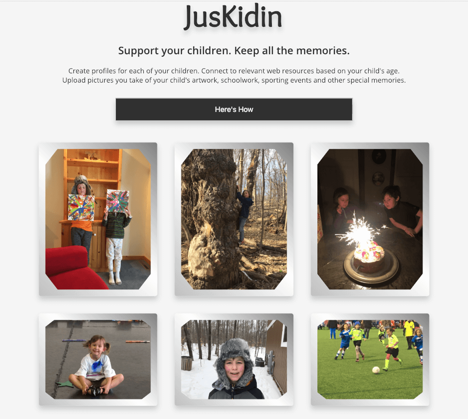
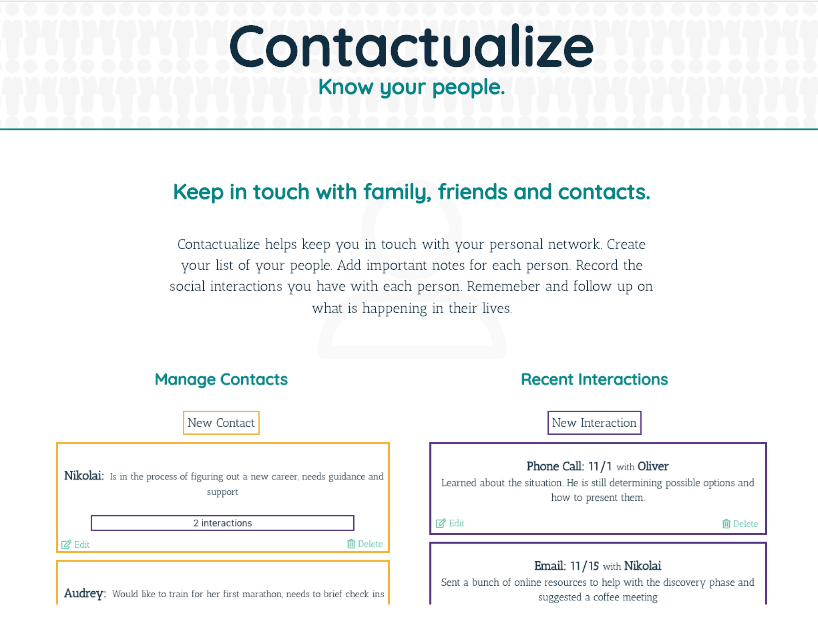

About Me
I live blocks from Lake Michigan in Milwaukee, Wisconsin. The main part of my professional career has been as a Montessori teacher and other roles in the field of education.
In the spirit of my backgroud as a educator, I believe in life-long learning. I embrace the hard work, creative thinking and problem solving required in software development.
When I am not in front of my computer, I enjoy tending to my bees, reading, and being outside. I also manage the development of an application I designed for Montessori teachers, Montessori Notes.
My projects are listed below. Please look at my resume to learn about my professional experience.
Projects

JusNoshin
JusNoshin allows users to find desired recipes through selecting ethnic cuisines and dietary restrictions. It then returns several recipes. Upon selecting a recipe the users is given a good wine pairing. My family has a lot of dietary preferences and restrictions. I wanted a tool to help find good food we could prepare together, and for the adults a good wine. This was one of my early projects. I was repsonsible for all aspects of this project.
- HTML5
- CSS3
- JavaScript
- JQuery
- AJAX

JusKidin
JusKidin is a web all-in-one tool for parents. The user creates profiles for each child by entering a name and a birthdate. Then, through a custom Google API, parents can get child developmental information for each child. Also, the user can create drawers. These drawers can be used to organize images by topic, event or some other custom title. Parents have a lot to manage and track. The vision of this app is to give parents a real tool to help. Also, children attend many events, create art and school projects. By digitizing thses items and memories, parents will be able to keep them all. I am responsible for all aspects of this application as well.
- HTML5
- CSS3
- JavaScript
- JQuery
- Google API
- Node
- Mongoose
- Express
- Passport
- RESTful API
- Mocha
- Chai

Contactualize
Contactualize is the beginning of a relationship manager. The web offers a lot of tools to track the sales cycle, but there are few tools to help track contacts. The user creates contacts by adding a name and notes. The user can also add interactions that are associated with a specific contact. This my first full stack application. I am responsible for all aspects of this project.
- HTML5
- CSS3
- JavaScript
- JQuery
- Google API
- Node
- Mongoose
- Express
- Passport
- RESTful API
- Mocha
- Chai
- React
- Redux
- React Router